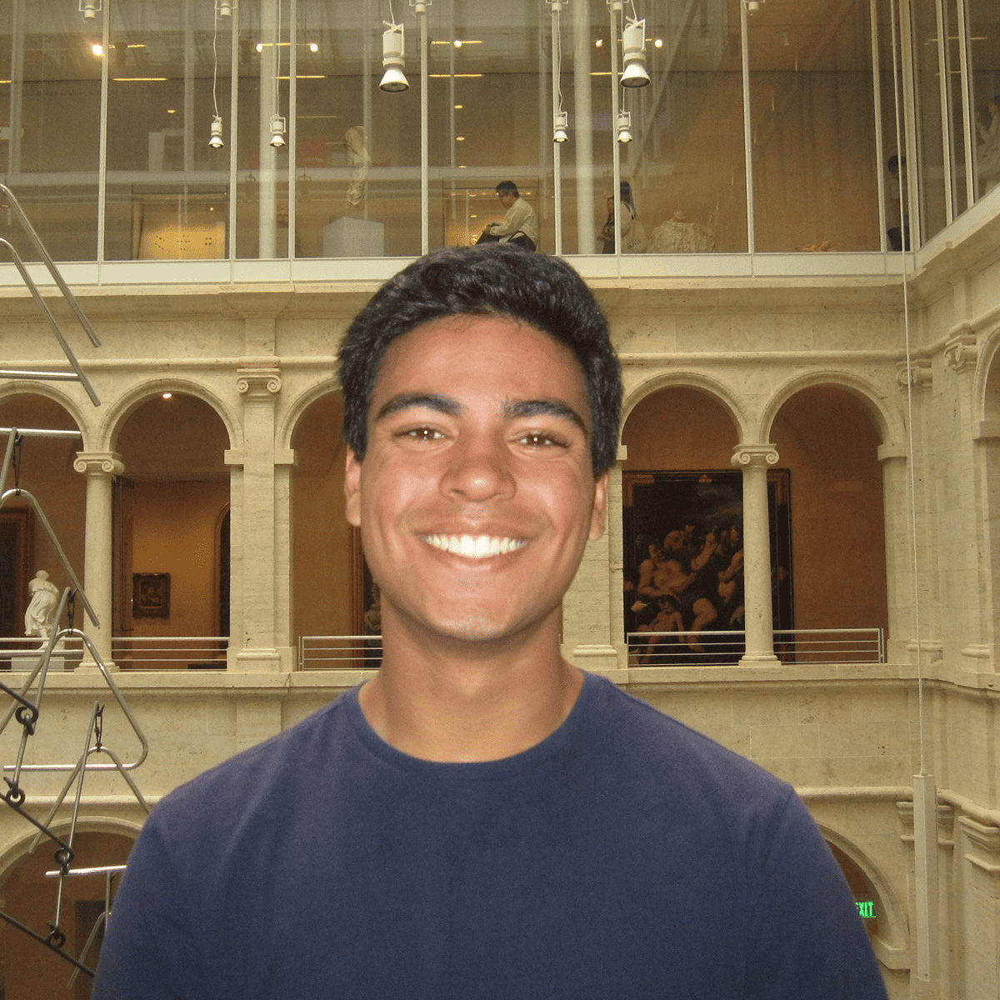

harvard art museumsDivit Rawal
I'm an undergrad at Berkeley studying statistics, physics, and computer science.
I'm interested in statistical learning and inference under structure, often in deep neural networks. I work on statistical learning theory in Berkeley's StatML group, deep learning theory at BAIR, and computational nuclear physics at LLNL.
Some recent work is available at /research. Some old final projects from coursework are at /projects, a collection of old crib sheets is at /notes, and I occasionally write about random technical interests at /posts.